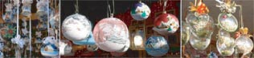
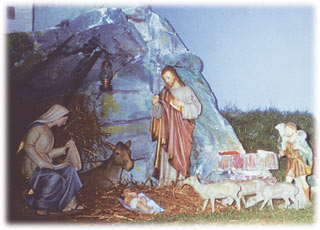

L’Italia in Australia
Attività 5 Natale in Italia
Walter abita nella città di Bolzano, Italia.
He has developed his own web page. The following is an excerpt from the section La mia città in which he speaks about i mercatini di Natale a Bolzano.


Photos reproduced with the permission of bolzano.net photographer
Guido Leonardi http://www.bolzano.net
I mercatini di Natale
La città di Bolzano è famosa per i mercatini di Natale. È ormai diventato l’appuntamento d’avvento da non perdere! Nella città c’è l'atmosfera tipica della preparazione al Natale. Si sentono, si gustano tutte le emozioni di Natale! I profumi del vin brulè e della pasticceria natalizia tipica del luogo si mescolano ai suoni della musica natalizia.
Le vie e le piazze del centro offrono l'opportunità di fare acquisti di prodotti tipici della regione.
Come arrivare a Bolzano
In treno: fino alla stazione di Bolzano con la linea ferroviaria del Brennero. Arrivare in treno è facile e conveniente: il centro si trova a 2 minuti a piedi dalla stazione.
Com’è l’atmosfera natalizia nella tua città? Lascia un commento.

Walter made the following comment about Christmas in Bolzano:
Nella città c’è l'atmosfera tipica della preparazione al Natale. Si sentono, si gustano tutte le emozioni di Natale.
He also asks:
Come è l’atmosfera natalizia nella tua città? Lascia un commento.
Leave a comment for Walter. Explain what the Christmas atmosphere is like nella tua città.
Scrivi in italiano.
Il presepio
In Italia un’altra tradizione natalizia è quella del presepio. Ci sono tanti tipi di presepi tra cui i presepi viventi. Durante il periodo di Natale ci sono tante mostre di presepi in giro per l’Italia.
Photo courtesy of M.Calabro
Search for information about the nativity tradition in Italy. This site has comprehensive information about the nativity tradition in Italy. Explore it to find out more about this aspect of Christmas in Italia.
Write notes in English on what you find out about il presepio and other Christmas traditions. Explore other relevant sites of your choice for further information.
Focus on the following aspects:
- nativity tradition
- traditions/celebrations
- typical Christmas food/sweets.
Go to Apply for a further attività related to the Christmas festive season.
Buon Natale a tutti!!
Clicca the images to view some Christmas decorations in Italy.

Photos courtesy of E.Galipò